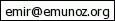

Emir Muñoz

Emir
Muñoz

I'm a PhD Student at the National University of Ireland (NUI) Galway and Researcher in the KI2NA project at Fujitsu Ireland Ltd. I started the PhD programme on February 2014. Before that I worked as Research Assistant at Digital Enterprise Research Institute (DERI) since October 2012. I am also a Computer Engineer and I hold a Master degree in Computer Engineering from Universidad de Santiago, Chile.
My research interests are: Databases, Web Data Mining, and Artificial Intelligence. Currently, focused on quality analysis of Linked Data.
- Current Affiliations
- Ph.D. Researcher at Fujitsu Ireland Limited
- 1st Year Ph.D. Student at National University of Ireland Galway
- Past Affiliations
- Research Assistant at Digital Enterprise Research Institute (DERI), Galway, Ireland. Reasoning and Querying Unit (URQ).
- Lecturer, Department of Computer Engineering, University of Santiago de Chile
- Lecturer, Faculty of Mathematics and Physical Sciences, Central University of Chile
- Research Intern at Digital Enterprise Research Institute (DERI), Galway, Ireland. Reasoning and Querying Unit (URQ).
- Project Engineer at Yahoo! Research Latin America, in the project Fondef "Observatorios Escalables de la Web en Tiempo-Real"
- Education
- Master of Computer Engineering, University of Santiago de Chile, Aug 2009-Apr 2011
- Diploma in Computer Engineering, University of Santiago de Chile, Apr 2011
- Bachelor of Science in Engineering, University of Santiago de Chile, Jun 2009
- Master Thesis
- Emir Muñoz: XML Keys: Implication and Validation Algorithms Implementation. Advisors: Flavio Ferrarotti and Mauricio Marín, University of Santiago de Chile, December 2010 [slides] (In Spanish)
- Grants, Awards & Fellowships
- Norman Revell Best Paper Award, In 23rd International Conference on Database and Expert Systems Applications - DEXA 2012, Vienna, Austria, September 3-6, Springer Lecture Notes in Computer Science [certificate]
- Master’s Fellowship, Yahoo! Research Labs Latin America, Master’s Thesis.
- Professional Activities
- Interest Areas
- Databases
- Web Data Mining
- Artificial Intelligence
- Recommended websites